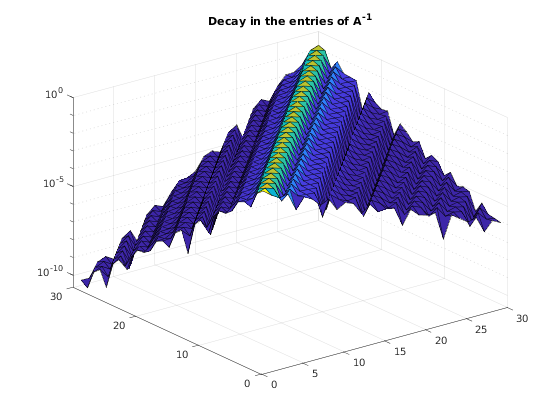

Arithmetic operations between QT matrices
Contents
Additions and multiplications
If we define two QT matrices $A$ and $B$, we can easily compute $C = A \pm B$ using the familiar matrix operations in MATLAB.
A = cqt([ 4 2 1 ], [4 -1 2]); B = cqt([ 6 3 1 1 ], [ 6 1 ]); C = A + B
C =
CQT Matrix of size Inf x Inf
- Toeplitz part (leading 6 x 5 block):
10 0 2 0 0
5 10 0 2 0
2 5 10 0 2
1 2 5 10 0
0 1 2 5 10
0 0 1 2 5
Matrix multiplication can be handled in a similar way. Note however that in this case the bandwidth of the result is larger, since the symbol $c(z)$ of the product $C = AB$ is the product of the symbols of $A$ and $B$, and therefore has higher degree.
C = A * B
C =
CQT Matrix of size Inf x Inf
Rank of top-left correction: 1
- Toeplitz part (leading 8 x 6 block):
25.0000 4.0000 11.0000 2.0000 0 0
26.0000 25.0000 4.0000 11.0000 2.0000 0
15.0000 26.0000 25.0000 4.0000 11.0000 2.0000
9.0000 15.0000 26.0000 25.0000 4.0000 11.0000
3.0000 9.0000 15.0000 26.0000 25.0000 4.0000
1.0000 3.0000 9.0000 15.0000 26.0000 25.0000
0 1.0000 3.0000 9.0000 15.0000 26.0000
0 0 1.0000 3.0000 9.0000 15.0000
- Finite correction (top-left corner):
-2.0000
-1.0000
Computing inverses
The inv command is overloaded. Although it is rarely a good idea to compute inverses directly, it may sometimes be useful. If a QT matrix is invertible, then its inverse is again in the QT class. The invertibility is equivalent (for infinite matrices) to asking that $a(z) \neq 0$ for $|z| = 1$. This condition is satisfied by both $A$ and $B$ defined above, so we may compute their inverses.
iA = inv(A);
It's importante to notice that in this case the symbol of iA$ is not of finite length, since it is the Laurent expansion of $a(z)^{-1}$. In practice, the toolbox automatically truncate the symbol to the necessary length. We can visualize the exponential decay of the symbol entries by plotting a finite section of the inverse.
surf(abs(iA(1:30, 1:30))); set(gca,'zscale','log'); % log-scale to appreciate the exponential decay title(gca, 'Decay in the entries of A^{-1}');
To check how long is the symbol, or how large is the support of the low-rank correction, we may use the command symbol and correction:
[am, ap] = symbol(iA); nm = length(am), np = length(ap), nc = size(correction(iA))
nm =
35
np =
63
nc =
34 62
These lengths are not symmetric because the symbol of $A$ was not symmetric in the first place.
Linear systems
Quite often, we do not need to explicitly compute the inverse, but rather to solve a linear system of the form
$$ Ax = b, $$
where $A$ is QT, and $x$ and $b$ vectors of infinite length. If this is the case, we may resort to computing a $UL$ factorization instead, and solve the system by running the following commands.
b = randn(4, 1); b = cqt(b); % We interpret b as a vector of infite size. x = A \ b; x = correction(x) % Automatically truncate x to the necessary length
x =
0.1268
-0.0019
0.1081
-0.1005
0.0295
0.0061
-0.0096
0.0037
0.0001
-0.0009
0.0004
-0.0000
-0.0001
0.0000
-0.0000
-0.0000
0.0000
-0.0000
-0.0000
0.0000
-0.0000
-0.0000
0.0000
-0.0000
0.0000
0.0000
-0.0000
0.0000
0.0000
-0.0000
0.0000
0.0000
-0.0000
0.0000
0.0000
-0.0000
0.0000
Please visit the chapter on linear systems for further details on this matter.